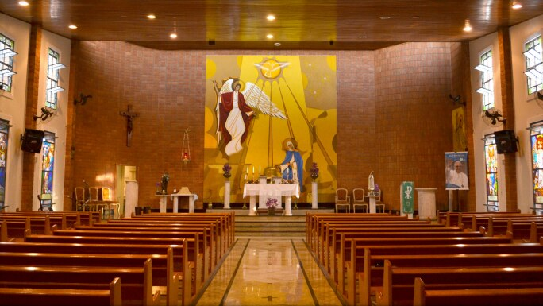
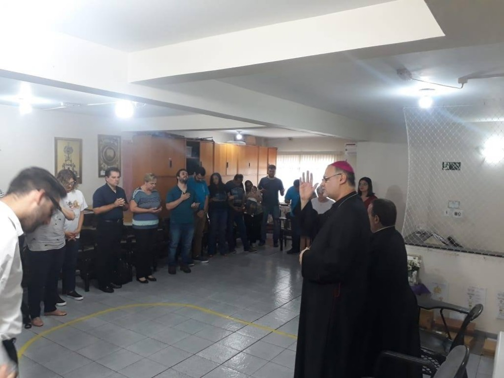
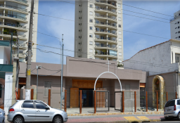
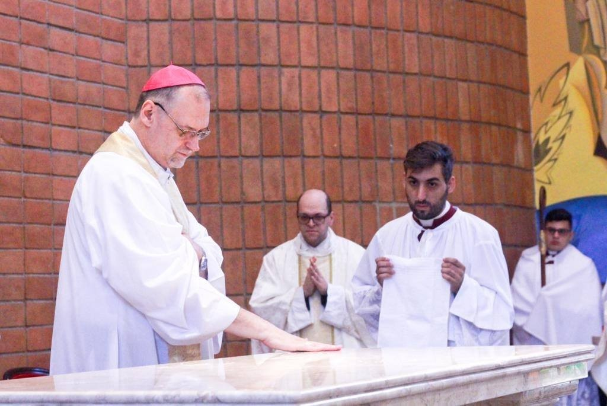
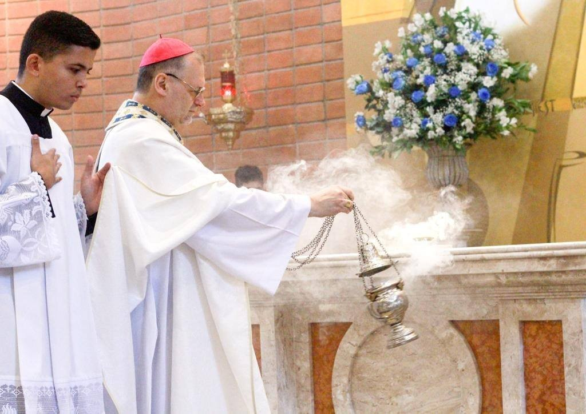
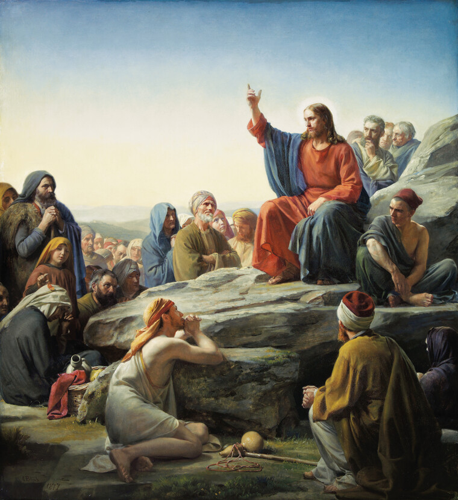

Missas
- Segunda a sexta
- 12h e 18h
- Sábado
- 9h e 17h
- Domingo
- 8h, 10h e 18h
A Eucaristia é a fonte e o ápice da vida cristã (CIC 1324).
Venha celebrar a Missa, confessar-se ou rezar conosco.
Rua Alexandre Dumas, 1879 · Chácara Santo Antônio

A Eucaristia é a fonte e o ápice da vida cristã (CIC 1324).
Quarta a sexta
11h às 14h e 16h às 19h.
Sábado
9h30 às 12h.
Na Reconciliação, recebemos o perdão de Deus e nos reconciliamos com a Igreja (CIC 1422). A Diocese não informa se é preciso agendar; confirme com a secretaria.
Horários habituais: Diocese de Santo Amaro, consulta em . Em feriados e solenidades, confirme com a secretaria.
Não há eventos futuros confirmados nesta demonstração. Para os avisos mais recentes, consulte o Instagram da paróquia ou fale com a secretaria.
Dom José Negri reuniu-se com as lideranças das pastorais para ouvir a comunidade.

No tricentenário do encontro da imagem, a paróquia e a Associação DABAR promoveram dois dias de reflexão sobre a devoção a Nossa Senhora Aparecida.
Registros da Diocese de Santo Amaro e do antigo site paroquial.
Pelo Batismo, nascemos para a vida em Cristo e passamos a fazer parte da Igreja (Mt 28,19; CIC 1213). A paróquia já oferecia preparação para o Batismo. Confirme com a secretaria como inscrever pais e padrinhos, quais documentos levar e quando será a celebração.
No Matrimônio, os esposos firmam uma aliança para toda a vida, elevada por Cristo à dignidade de sacramento entre batizados (Mt 19,4–6; CIC 1601). Pergunte à secretaria sobre a preparação de noivos, os documentos e as datas disponíveis.
A comunidade da Chácara Santo Antônio guarda no antigo site a data de sua fundação. O acervo da Diocese mostra o dia em que o bispo dedicou a igreja e o altar.
É fundada a Paróquia Verbo Divino, hoje parte da Forania Santo Amaro.
Durante a visita pastoral, Dom José Negri celebrou com os doentes, encontrou-se com as lideranças e dedicou a igreja e o altar.
O Pe. Douglas de Freitas Ferreira tomou posse como pároco em Missa presidida por Dom José Negri.
No presbitério, o painel dourado fica entre paredes de tijolo aparente. Duas das fotos abaixo registram o rito de dedicação de 2019: o bispo junto ao altar e, depois, o incenso sobre ele.



Fotografias: Diocese de Santo Amaro e Pascom Diocesana · arquivo de 2019.

O Filho de Deus se fez homem. Em Belém, Maria o deitou numa manjedoura; foram os pastores que receberam o anúncio do seu nascimento.
Como imitá-lo: Faça hoje um bem que ninguém precise ver ou elogiar.
Jesus ensina que, se lembrarmos diante do altar que um irmão tem alguma queixa contra nós, devemos buscar a reconciliação antes de apresentar a oferta.
Como imitá-lo: Se você feriu alguém, dê o primeiro passo: reconheça o que fez e peça perdão.
Jesus, Mestre e Senhor, lavou os pés dos discípulos e lhes pediu que fizessem uns pelos outros o que ele acabara de fazer.
Como imitá-lo: Assuma uma tarefa de casa que costuma sobrar para outra pessoa.
Os discípulos estavam reunidos de portas fechadas por medo. Jesus ressuscitado pôs-se no meio deles, desejou-lhes a paz e os enviou.
Como imitá-lo: Numa conversa tensa, escute até o fim e responda sem devolver a ofensa.
«O Verbo se fez carne e habitou entre nós.»
João 1,14
O antigo site paroquial apresenta o padroeiro com uma catequese de Bento XVI sobre a Encarnação.
Rua Alexandre Dumas, 1879 · Chácara Santo Antônio, São Paulo
Terça a sexta, 9h–13h e 14h–18h
Sábado, 8h–13h e 14h–17h
(11) 5181-8817 · verbodivino@santoamaro.org.br
Pároco: Pe. Douglas de Freitas Ferreira
Diocese de Santo Amaro · consulta em .
Rua Alexandre Dumas, 1879 · Chácara Santo Antônio, São Paulo
O Google Maps ainda mostra o número antigo, 1469, no marcador da igreja.